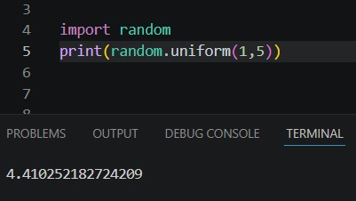

The Random module, which one of the functions can be seen in the first part of this chapter, is used to randomly select, create, and do so much more with ints.
As seen in the first part of this chapter, the ‘random.random()’ function generates a random number between 0 and 1.

Another useful function is the uniform() function that generates a random number between two specified variables; ‘random.uniform(val1 , val2)’.

To find out more about what this library can do, you should look up the random module and look at all the other cool things you can do.